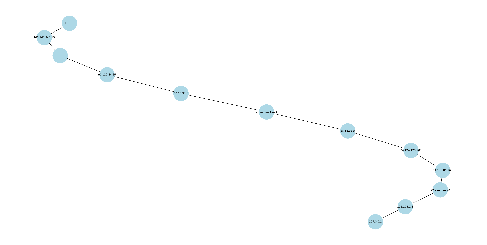

Usage¶
Command-line Flags¶
- -i, --ip <CIDR>¶
Required. Target IP address or target network in CIDR notation for the network scan.
(e.g.,
1.1.1.1or192.168.1.0/24)
- -s, --scan-type {SYN, ICMP}¶
The type of network scan to be performed. Defaults to
ICMP.
- -m, --method {TCP, ICMP}¶
The traceroute method to use on each target host. Defaults to
ICMP.
- -l, --max-hops <HOPS>¶
The maximum number of hops to perform on each traceroute trace. The provided value must be between 0 and 255 inclusive. Defaults to
30.
- -p, --ports <PORTS>¶
A comma-separated list of ports to enumerate. The list can contain either singular port numbers, a range of port numbers which is given as an inclusive lower and upper bound, or both.
(e.g.,
20,22,80,443or20-30,40-50or40-50,80,443,8080)This option is only used when the selected scan type is
SYN. If no ports are specified, a default set of ports will be enumerated, which are listed below.
- -t, --timeout <TIMEOUT>¶
Timeout in seconds for how long to wait to receive a response packet from a host. The provided timeout value must be non-negative. Defaults to
2.
- -d, --do-not-scan <PATH>¶
Absolute or relative file path to a text file where each line in the file is either a single IP address or CIDR IP range. Every listed IP will not be scanned when the network scan is performed. Defaults to
"".(e.g.,
blacklist.txtor/Users/username/Documents/blacklist.txt)
- -c, --create-image¶
If this flag is included, an image named
traceroute.pngwill be generated in the local directory where the program was executed. The generated image is a visualization of the traceroute operations that were performed. This helps provide the user with a way to visualize the topology of the network they are scanning.
- -o, --os-detection¶
If this flag is included, a set of tests will be performed against each alive host during the network scan in order to take an educated guess at the operating system of each alive host. This works for both
ICMPandSYNscans.
- -sV, --service-scan¶
If this flag is included, each open port will be further scanned in order to identify the service running on the port and its associated version if it can be determined. This will include a confidence level with regards to identification of the service running on the open port. This flag will only work for
SYNscans.
- -cV, --cve-scan¶
If this flag is included, each service associated with an open port will be queried via its version number if it has one, for any relevant CVEs. Any relevant CVEs will be stored in an output file named
cve_report.txt, which will be saved in the local directory where the program was executed. This flag will only work if the scan type isSYN, and the service scan flag is included as well.
- -v, --verbose¶
If this flag is included, all scanned ports will be displayed during a SYN scan. Otherwise, only open ports will be displayed. This flag only works for
SYNscans.
Default ports¶
The following ports are scanned by default if no port list is provided for a SYN scan.
Port |
Service |
|---|---|
20 |
FTP |
21 |
FTP |
22 |
SSH |
23 |
Telnet |
25 |
SMTP |
53 |
DNS |
88 |
Kerberos |
80 |
HTTP |
8080 |
HTTP |
443 |
HTTPS |
110 |
POP3 |
995 |
POP3S |
135 |
RPC |
445 |
SMB |
143 |
IMAP |
993 |
IMAPS |
389 |
LDAP |
3306 |
MySQL |
3389 |
RDP |
5432 |
Postgres |
Example Usage¶
Note
This program must be run with root privileges using sudo.
Command¶
sudo python3 main.py -i 127.0.0.1 -s SYN -sV -cV -o -t 1
Note
If the above command does not work, you may have to replace python3 with the path to your virtual environment’s python executable as shown below.
sudo ../venv/bin/python3 main.py -i 127.0.0.1 -s SYN -sV -cV -o -t 1
Output¶
Note
The selfscan portion of this program will be skipped if you are using
an operating system that does not have the /proc directory.
========[STARTING NETWORK SELF SCAN]========
Inode: 31276
PID: 10807
Comm: nginx
Proto: TCP
Local: 0.0.0.0:80
Remote: 0.0.0.0:*
State: LISTEN
Cmdline: nginx: worker process
Inode: 25902
PID: 8270
Comm: sshd
Proto: TCP
Local: 0.0.0.0:22
Remote: 0.0.0.0:*
State: LISTEN
Cmdline: sshd: /usr/sbin/sshd -D [listener] 0 of 10-100 startups
Inode: 31277
PID: 10807
Comm: nginx
Proto: TCP6
Local: :::80
Remote: :::*
State: LISTEN
Cmdline: nginx: worker process
Inode: 25904
PID: 8270
Comm: sshd
Proto: TCP6
Local: :::22
Remote: :::*
State: LISTEN
Cmdline: sshd: /usr/sbin/sshd -D [listener] 0 of 10-100 startups
========[STARTING SYN NETWORK SCAN]=========
Host: 127.0.0.1
OS best guess: Linux
4/4 tests passed
Reasoning:
(1). TTL is not above 64.
(2). Sends IPID of zero on RST packets.
(3). IPID does not consistently increment by one.
(4). Each IPID is greater than the previous.
------------------------------------------------------------------------------------------------------------------------------------------------------
PORT STATUS SERVICE VERSION CONFIDENCE
22/tcp open ssh OpenSSH 10.0p2 Debian-5 HIGH (direct banner identification)
80/tcp open http nginx/1.26.3 MEDIUM (protocol-specific response)
------------------------------------------------------------------------------------------------------------------------------------------------------
SYN scan complete: 1 IP addresses (1 hosts up) scanned in 33.45 seconds
===========[STARTING ICMP TRACEROUTE]===========
traceroute to 127.0.0.1, 30 hops max
----------------------------------------------------------------------
1 - 127.0.0.1 - 30.19ms 39.43ms 31.88ms (Destination Reached)
----------------------------------------------------------------------
In the above output, each of the three times in milliseconds next to the hop represent the round-trip times for each of the three probe packets sent to that hop.
Generated CVE Report File¶
========[CVE REPORT]========
HOST: 127.0.0.1
PORT: 22 (ssh)
VERSION: OpenSSH 10.0p2 Debian-5
CVEs: CVE-2007-2768, CVE-2008-3844, CVE-2023-51767
--------------------------------------------------------------------------------
HOST: 127.0.0.1
PORT: 80 (http)
VERSION: nginx/1.26.3
CVEs: No relevant CVEs could be found for this particular service and version.
--------------------------------------------------------------------------------
Example Traceroute Visualization to 1.1.1.1¶
Traceroute operations where the destination host could not be reached are not included in the visualization image.